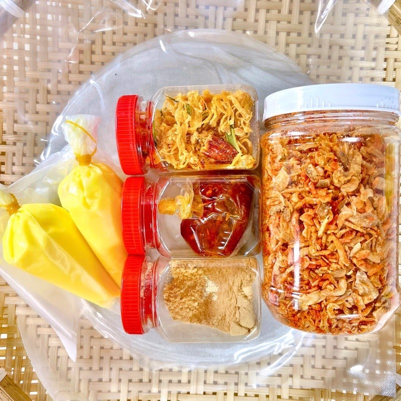
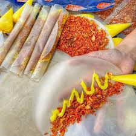
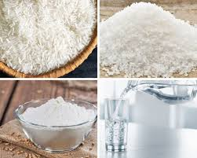

Giới Thiệu Về Bánh Tráng Phơi Sương
Bánh tráng phơi sương là một trong những món ăn đặc sản nổi tiếng của miền Trung Việt Nam. Được làm từ nguyên liệu chính là gạo tẻ, bánh tráng phơi sương có hương vị giòn nhẹ, mềm mịn và thơm ngon. Quy trình làm bánh tráng thủ công này không chỉ đòi hỏi sự khéo léo mà còn mang đậm nét văn hóa truyền thống của người dân miền Trung.

Quy Trình Làm Bánh Tráng Phơi Sương
Quy trình làm bánh tráng phơi sương khá công phu và tinh tế, bắt đầu từ việc chọn gạo, xay bột, đến tráng bánh và phơi bánh dưới ánh nắng tự nhiên. Bánh tráng phơi sương sẽ có độ giòn vừa phải, không quá khô, nhờ quá trình phơi dưới ánh nắng sương sớm, tạo nên sự khác biệt độc đáo so với các loại bánh tráng khác.
Các Bước Làm Bánh Tráng Phơi Sương
- Chọn lựa nguyên liệu: Gạo tẻ phải được chọn lọc kỹ lưỡng, đảm bảo bánh có độ dẻo và giòn đặc trưng.
- Ngâm và xay gạo: Gạo được ngâm trong nước từ 6-8 tiếng để mềm, sau đó xay nhuyễn thành bột mịn, lọc qua rây để loại bỏ tạp chất.
- Tráng bánh: Bột gạo được đổ lên khuôn tráng bánh mỏng và tráng qua nồi nước sôi để bánh mềm dẻo.
- Phơi bánh: Sau khi tráng, bánh được phơi dưới ánh nắng mặt trời từ 2-3 tiếng để giữ độ giòn và dẻo vừa phải.
- Hoàn thiện: Bánh tráng sau khi phơi xong sẽ được bảo quản trong bao bì kín, giúp giữ được độ giòn và hương vị tự nhiên.
Nguyên Liệu Cần Chuẩn Bị

- 500g gạo tẻ
- 1 lít nước sạch
- 1/2 thìa cà phê muối
- Khuôn tráng bánh (hoặc vật dụng khác để tráng bánh)
- Ánh nắng mặt trời hoặc ánh sáng tự nhiên
Hướng Dẫn Thưởng Thức Bánh Tráng Phơi Sương
Bánh tráng phơi sương có thể dùng làm món ăn chính hoặc ăn kèm với các món ăn khác như gỏi, cuốn, hay nướng. Một số cách thưởng thức bánh tráng phơi sương phổ biến bao gồm:
- Bánh tráng cuốn: Cuốn với rau sống, thịt luộc, tôm, hoặc chả giò và chấm với nước mắm pha chua ngọt.
- Bánh tráng nướng: Nướng trên bếp than hoặc bếp nướng, ăn kèm với các gia vị như tiêu, ớt, hoặc tôm nướng.
- Bánh tráng cuốn gỏi: Dùng bánh tráng cuốn với các nguyên liệu làm gỏi như thịt gà, rau sống, đậu phộng, và nước mắm chua ngọt.